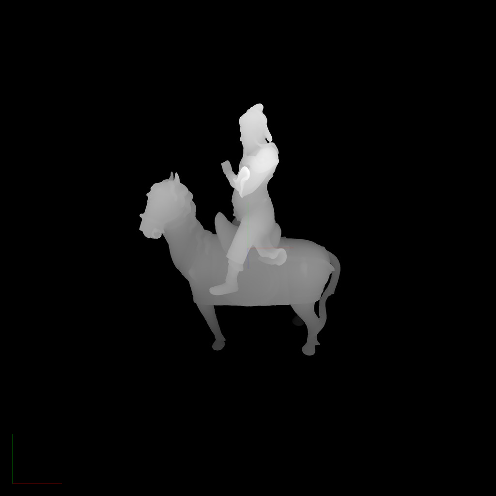
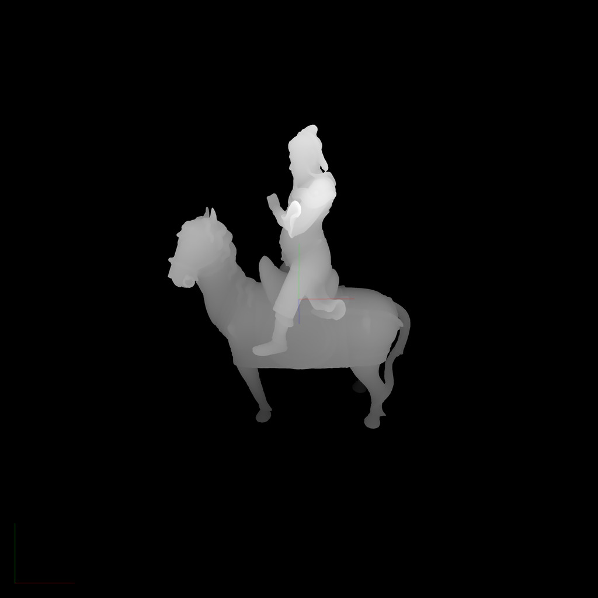
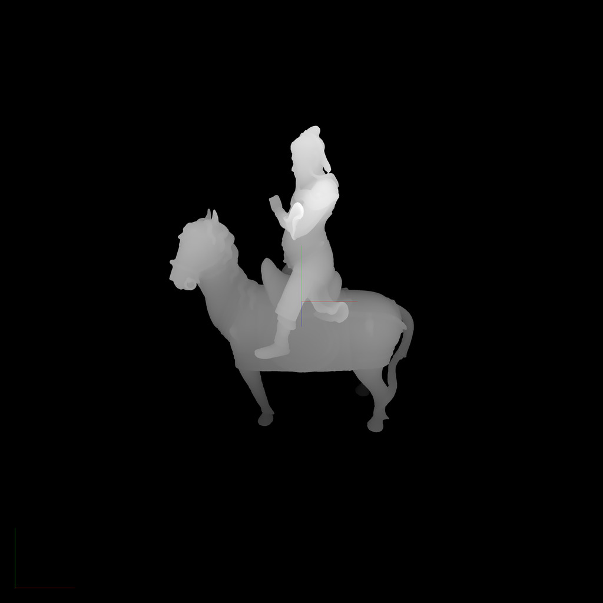

I have written some polygon rasterization renderers and ray-tracing renderers from scratch. Over all, I am partial to rasterization because of its traditional relevance to games. If a project of mine grows to a certain size, I will probably try to include hand-rolled renderer somewhere inside of it.
